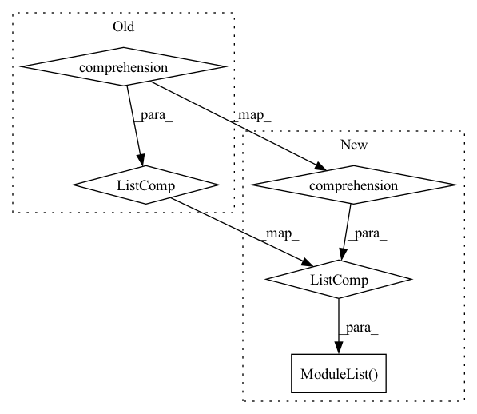

Pattern ID :550
Before Change
self.fc1 = [nn.Linear(in_features=512, out_features=256).to(self.device) for _ in range(self.agents)]
self.prelu4 = [nn.PReLU().to(self.device) for _ in range(self.agents)]
self.fc2 = [nn.Linear(in_features=256, out_features=128).to(self.device) for _ in range(self.agents)]
self.prelu5 = [nn.PReLU().to(self.device) for _ in range(self.agents)]
self.fc3 = [nn.Linear(in_features=128, out_features=number_actions).to(self.device) for _ in range(self.agents)]
print("Network2d", self)
After Change
self.fc1 = nn.ModuleList([nn.Linear(in_features=512, out_features=256).to(self.device) for _ in range(self.agents)])
self.prelu4 = nn.ModuleList([nn.PReLU().to(self.device) for _ in range(self.agents)])
self.fc2 = nn.ModuleList( [nn.Linear(in_features=256, out_features=128).to(self.device) for _ in range(self.agents)])
self.prelu5 = nn.ModuleList([nn.PReLU().to(self.device) for _ in range(self.agents)])
self.fc3 = nn.ModuleList([nn.Linear(in_features=128, out_features=number_actions).to(self.device) for _ in range(self.agents)])
In pattern: SUPERPATTERN
Frequency: 8
Non-data size: 5
Instances Fragment ID: 1679449
Project Name: gml16/rl-medical
Commit Name: fa1cdb06bb080c03121214976877d37d2095f511
Time: 2020-03-09
Author: g.m.leroy@outlook.com
File Name: examples/LandmarkDetection/DQN/DQNModelTorch.py
M Class Name: Network3D
N Class Name: Network3D
M Method Name: __init__(4)
N Method Name: __init__(4)
M Parent Class: nn.Module
N Parent Class: nn.Module
M File Name: examples/LandmarkDetection/DQN/DQNModelTorch.py
N File Name: examples/LandmarkDetection/DQN/DQNModelTorch.py
M Start Line: 112
M End Line: 117
N Start Line: 115
N End Line: 119
Before Change
self.query = [nn.Linear(args["hidden_size"], args["key_size_input"] * args["num_input_heads"]).to(device) for _ in range(args["num_units"])]
self.query_ = [nn.Linear(args["hidden_size"], args["query_size_comm"] * args["num_comm_heads"]).to(self.device) for _ in range(args["num_units"])]
self.key_ = [nn.Linear(args["hidden_size"], args["key_size_comm"] * args["num_comm_heads"]).to(self.device) for _ in range(args["num_units"])]
self.value_ = [nn.Linear(args["hidden_size"], args["value_size_comm"] * args["num_comm_heads"]).to(self.device) for _ in range(args["num_units"])]
def transpose_for_scores(self, x, num_attention_heads, attention_head_size):
new_x_shape = x.size()[:-1] + (num_attention_heads, attention_head_size)After Change
self.query = nn.ModuleList([nn.Linear(args["hidden_size"], args["key_size_input"] * args["num_input_heads"]) for _ in range(args["num_units"])])
self.query_ = nn.ModuleList([nn.Linear(args["hidden_size"], args["query_size_comm"] * args["num_comm_heads"]) for _ in range(args["num_units"])])
self.key_ = nn.ModuleList([nn.Linear(args["hidden_size"], args["key_size_comm"] * args["num_comm_heads"]) for _ in range(args["num_units"])])
self.value_ = nn.ModuleList( [nn.Linear(args["hidden_size"], args["value_size_comm"] * args["num_comm_heads"]) for _ in range(args["num_units"])])
self.comm_attention_output = nn.ModuleList([nn.Linear(args["num_comm_heads"] * args["value_size_comm"], args["value_size_comm"]) for _ in range(args["num_units"])])
self.comm_dropout = nn.Dropout(p =0.1)
self.input_dropout = nn.Dropout(p =0.1)
Fragment ID: 1679448
Project Name: dido1998/recurrent-independent-mechanisms
Commit Name: bc15ade18e0de7129a778dffdf74bd218dda3607
Time: 2020-02-07
Author: adidolkar123@gmail.com
File Name: networks.py
M Class Name: RIM
N Class Name: RIM
M Method Name: __init__(3)
N Method Name: __init__(3)
M Parent Class: nn.Module
N Parent Class: nn.Module
M File Name: networks.py
N File Name: networks.py
M Start Line: 8
M End Line: 26
N Start Line: 8
N End Line: 29
Before Change
// self._encoder = nn.Transformer(cin, )
self._encoder = nn.TransformerEncoder(nn.TransformerEncoderLayer(cin, 8, cin, rate, "gelu"), 12, None)
self._decoder = nn.TransformerDecoder(nn.TransformerDecoderLayer(cin, 8, cin, rate, "gelu"), 12, None)
self._codebook = nn.ModuleList([nn.Linear(numCodewords, cin, bias=False) for numCodewords in k] )
self._k = k
self._d = float(cin) ** 0.5
self._c = cinAfter Change
setattr(self, f"codebook{i}", nn.Parameter(torch.randn(numCodewords, cin)))
self._codebookAsKey = nn.ModuleList([nn.Linear(cin, cin) for numCodewords in k])
self._codebookAsValue = nn.ModuleList([nn.Linear(cin, cin) for numCodewords in k])
self._xAsQuery = nn.ModuleList( [nn.Linear(cin, cin) for numCodewords in k])
self._k = k
self._scaling = [sqrt(kk) for kk in k]
self._d = float(cin) ** 0.5
self._c = cin Fragment ID: 1679435
Project Name: xiaosu-zhu/mcquic
Commit Name: 594ba7cd5c9d147e95ba5bd0b842270302dea2a2
Time: 2021-03-02
Author: xiaosu.zhu@outlook.com
File Name: src/mcqc/models/quantizer.py
M Class Name: TransformerQuantizer
N Class Name: TransformerQuantizer
M Method Name: __init__(4)
N Method Name: __init__(4)
M Parent Class: nn.Module
N Parent Class: nn.Module
M File Name: src/mcqc/models/quantizer.py
N File Name: src/mcqc/models/quantizer.py
M Start Line: 213
M End Line: 218
N Start Line: 214
N End Line: 220
Before Change
self.embedding = nn.Embedding(vocab_size + 3, d_model) // 3 more classes EOS/SOS/PAD
self.pos_encoding = positional_encoding(maximum_position_encoding, d_model)
self.dec_layers = [
nn.TransformerDecoderLayer(
d_model=d_model,
nhead=num_heads,
dim_feedforward=dff,
dropout=dropout,
activation="relu",
) for _ in range(num_layers)
]
self.dropout = nn.Dropout(dropout)
def forward(After Change
self.embedding = nn.Embedding(vocab_size + 3, d_model) // 3 more classes EOS/SOS/PAD
self.register_buffer("pos_encoding", positional_encoding(maximum_position_encoding, d_model))
self.dec_layers = nn.ModuleList( [
nn.TransformerDecoderLayer(
d_model=d_model,
nhead=num_heads,
dim_feedforward=dff,
dropout=dropout,
activation="relu",
) for _ in range(num_layers)
])
self.dropout = nn.Dropout(dropout)
def forward( Fragment ID: 1679434
Project Name: mindee/doctr
Commit Name: d397a2c602b6140024c06879e08a2555e39d5cc6
Time: 2021-07-07
Author: 76527547+fg-mindee@users.noreply.github.com
File Name: doctr/models/recognition/transformer/pytorch.py
M Class Name: Decoder
N Class Name: Decoder
M Method Name: __init__(8)
N Method Name: __init__(8)
M Parent Class: nn.Module
N Parent Class: nn.Module
M File Name: doctr/models/recognition/transformer/pytorch.py
N File Name: doctr/models/recognition/transformer/pytorch.py
M Start Line: 45
M End Line: 61
N Start Line: 47
N End Line: 63
Before Change
self.output_size = output_size
self.device = device
self.lstm_layers = [
nn.LSTMCell(
in_size,
hidden_size,
).to(device)
for in_size in [input_size] + [hidden_size] * (num_layers - 1)
]
self.embeddings = nn.Embedding(vocab_size, input_size)
self.decoder = nn.Linear(hidden_size, output_size)
self.num_predictions = num_predictions
After Change
self.output_size = output_size
self.device = device
self.lstm_layers = nn.ModuleList(
[
nn.LSTMCell(
in_size,
hidden_size,
).to(device)
for in_size in [input_size] + [hidden_size] * (num_layers - 1)
]
)
self.embeddings = nn.Embedding(vocab_size, input_size)
self.decoder = nn.Linear(hidden_size, output_size)
self.num_predictions = num_predictions
Fragment ID: 1679436
Project Name: kaleidophon/nlp-uncertainty-zoo
Commit Name: 0397aff53f44db04e6d8b8432c5aaa4090659e91
Time: 2021-06-16
Author: dennis.ulmer@gmx.de
File Name: src/dropout.py
M Class Name: VariationalLSTMModule2
N Class Name: VariationalLSTMModule2
M Method Name: __init__(11)
N Method Name: __init__(11)
M Parent Class: nn.Module
N Parent Class: nn.Module
M File Name: src/dropout.py
N File Name: src/dropout.py
M Start Line: 131
M End Line: 136
N Start Line: 130
N End Line: 138
Before Change
self.queues = None
if n_queues > 0:
self.queues = [MemoryBankModule(size=queue_length) for _ in range(n_queues)]
self.queues = nn.ModuleList(self.queues)
self.queue_length = queue_length
self.num_features_queued = 0
self.start_queue_at_epoch = start_queue_at_epochAfter Change
self.prototypes = SwaVPrototypes(128, 512, 1)
self.start_queue_at_epoch = 2
self.queues = nn.ModuleList( [MemoryBankModule(size=3840) for _ in range(2)])
def forward(self, high_resolution, low_resolution, epoch):
self.prototypes.normalize()
Fragment ID: 1679438
Project Name: lightly-ai/lightly
Commit Name: 54cb38a592630d1db530d73b614c06d7b1f65c9d
Time: 2023-02-02
Author: niccolo@lightly.ai
File Name: examples/pytorch/swav_queue.py
M Class Name: SwaV
N Class Name: SwaV
M Method Name: __init__(2)
N Method Name: __init__(9)
M Parent Class: nn.Module
N Parent Class: nn.Module
M File Name: examples/pytorch/swav_queue.py
N File Name: examples/pytorch/swav_queue.py
M Start Line: 16
M End Line: 32
N Start Line: 16
N End Line: 23
Before Change
self.rel_pos_bias = T5RelativePositionBias(query_key_dim ** 0.5, causal = causal)
rotary_pos_emb = RotaryEmbedding(dim = min(32, query_key_dim))
self.layers = [FLASH(dim = dim, group_size = group_size, query_key_dim = query_key_dim, expansion_factor = expansion_factor, causal = causal, dropout = attn_dropout, rotary_pos_emb = rotary_pos_emb, norm_klass = norm_klass) for _ in range(depth)]
self.to_logits = nn.Sequential(
nn.LayerNorm(dim),
nn.Linear(dim, num_tokens)After Change
self.rel_pos_bias = T5RelativePositionBias(query_key_dim ** 0.5, causal = causal)
rotary_pos_emb = RotaryEmbedding(dim = min(32, query_key_dim))
self.layers = nn.ModuleList( [FLASH(dim = dim, group_size = group_size, query_key_dim = query_key_dim, expansion_factor = expansion_factor, causal = causal, dropout = attn_dropout, rotary_pos_emb = rotary_pos_emb, norm_klass = norm_klass) for _ in range(depth)])
self.to_logits = nn.Sequential(
nn.LayerNorm(dim),
nn.Linear(dim, num_tokens) Fragment ID: 1679440
Project Name: lucidrains/flash-pytorch
Commit Name: 6ef50733c46d7dac7e30f28b492e425bfc3238ed
Time: 2022-03-28
Author: lucidrains@gmail.com
File Name: flash_pytorch/flash_pytorch.py
M Class Name: FLASHTransformer
N Class Name: FLASHTransformer
M Method Name: __init__(1)
N Method Name: __init__(1)
M Parent Class: nn.Module
N Parent Class: nn.Module
M File Name: flash_pytorch/flash_pytorch.py
N File Name: flash_pytorch/flash_pytorch.py
M Start Line: 373
M End Line: 373
N Start Line: 373
N End Line: 373
Before Change
self.input_projection = nn.Sequential(
nn.Linear(encoder_dim, encoder_dim), nn.Dropout(p=dropout)
)
module_list = [
ConformerBlock(
encoder_dim=encoder_dim,
num_attention_heads=num_heads,
feed_forward_expansion_factor=feed_forward_expansion_factor,
conv_expansion_factor=conv_expansion_factor,
feed_forward_dropout_p=dropout,
attention_dropout_p=dropout,
conv_dropout_p=dropout,
conv_kernel_size=conv_kernel_size,
half_step_residual=half_step_residual,
)
for _ in range(num_layers)
]
self.layers = nn.Sequential(*module_list)
def forward(self, x, lengths):
x, lengths = self.conv_subsampling(x, lengths)After Change
input_dim=input_dim, feat_out=encoder_dim, conv_channels=encoder_dim
)
self.input_dropout = nn.Dropout(p=input_dropout_p)
self.layers = nn.ModuleList(
[
ConformerBlock(
encoder_dim=encoder_dim,
num_attention_heads=num_attention_heads,
feed_forward_expansion_factor=feed_forward_expansion_factor,
conv_expansion_factor=conv_expansion_factor,
feed_forward_dropout_p=feed_forward_dropout_p,
attention_dropout_p=attention_dropout_p,
conv_dropout_p=conv_dropout_p,
conv_kernel_size=conv_kernel_size,
half_step_residual=half_step_residual,
)
for _ in range(num_layers)
]
)
def count_parameters(self) -> int:
Count parameters of encoder
return sum([p.numel for p in self.parameters()]) Fragment ID: 1679431
Project Name: manhph2211/vistt
Commit Name: 742be9424d91058a3c3e25adc4db742534fffab3
Time: 2022-08-30
Author: manhph5@vingroup.net
File Name: VASR/local/src/models/conformer/encoder.py
M Class Name: ConformerEncoder
N Class Name: ConformerEncoder
M Method Name: __init__(13)
N Method Name: __init__(16)
M Parent Class: nn.Module
N Parent Class: nn.Module
M File Name: VASR/local/src/models/conformer/encoder.py
N File Name: VASR/local/src/models/conformer/encoder.py
M Start Line: 93
M End Line: 134
N Start Line: 119
N End Line: 149